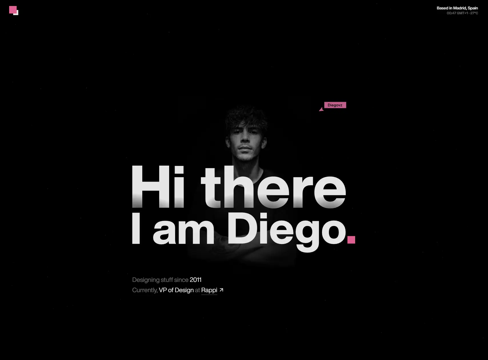

Diego
- Портфолио
- Личные сайты и портфолио
- Дизайнер
- Дизайнерам
- Минимализм
- Монохром
- Тёмная тема
- Нейтральный фон
- Прелоадер
- Кастомный курсор
- Микроанимации
- Встроенная игра
- Звук
- WordPress
- Elementor
- Wavo
- Royal Elementor Addons
- Lottie
- jQuery
- Swiper
- Yoast SEO
- W3 Total Cache
- Английский язык
- Испания
- Действующий сайт

Что это
Персональный сайт Диего Вильяроэля — дизайн-лидера из Мадрида. Главная — одна длинная страница: крупное приветствие, избранные проекты (Rappi, Clash Royale, Roostfy), статьи, список книг и награды. Самое интересное — блок «Fragments of me»: семь плиток-историй о карьере, у каждой свой маленький интерактив. Стильный персональный сайт Диего Вильяроэля — продуктового дизайнера из Мадрида. Продуманная в мелочах вёрстка и необычный интерактивный блок, рассказывающий об опыте.
Что смотреть в первую очередь
Смотреть первый экран с приветствием и блок «Fragments of me»: семь плиток со своими мини-интерактивами — терминал, плеер, история о начале карьеры. Внизу можно сыграть с автором партию в крестики-нолики.
Приёмы
- Прелоадер
- Кастомный курсор
- Микроанимации
- Встроенная игра
- Звук
Интересные факты
- Приветствие на первом экране набрано не текстом, а пятью отдельными SVG-картинками — по слову в каждой: hi, there, i, am, diego.
- Блок «Fragments of me» — сетка из семи плиток, у каждой свой отдельный скрипт: в одной печатается мини-терминал с командами вроде pnpm diegovz@skills init, в другой стоит плеер с любимым треком автора, ещё одна рассказывает, как он начинал иллюстратором.
- В подвале встроены крестики-нолики с приглашением «Can you beat me?» и тремя звуками: на ход, на победу и на поражение.
- Указатель мыши заменён своим набором курсоров, а подсказки вроде «My fav song of my fav game :)» следуют за мышью.
- В шапке идут живые данные о Мадриде: часы по часовому поясу Europe/Madrid и температура из открытого сервиса open-meteo.
- Внизу страницы — счётчик посетителей (567 058) и пометка, что это пятая версия портфолио.
- Раздел Readings — длинный список книг, следом блок наград и упоминаний: Awwwards, CSS Design Awards, Mobbin, Save Design и другие площадки.
Паспорт
- Домен
- diegovz.com
- Тип сайта
- Портфолио
- Категории
- Личные сайты и портфолио
- Подкатегории
- Дизайнер
- Для кого
- Дизайнерам
- Стиль
- Минимализм, Монохром
- Язык
- Английский
- Страна
- Испания, Мадрид
- Автор
- Диего Вильяроэль — продуктовый дизайнер
- Год
- 2026
- Добавлен в коллекцию
- 11.11.2026
Палитра
-
#000000— 94% кадра -
#E4E4E4— 4% кадра -
#353434— 1% кадра -
#5F5F5F— 0% кадра -
#BFBFBF— 0% кадра
- Режим
- Тёмная
- Цвет фона
- Нейтральный
Технологии
- WordPress
- Elementor
- Wavo (тема)
- Royal Elementor Addons
- Lottie
- jQuery
- Swiper
- Yoast SEO
- W3 Total Cache